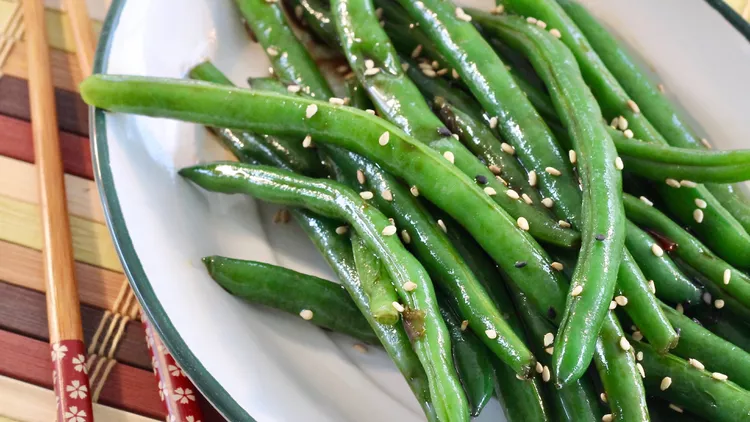

Asian Green Bean Salad

Image of asain green bean salad.
Simple side dish to add to your family meals.
Quick and easy prep time. Takes 30 minutes to
make and makes 4 servings.
Ingredients
- 1 pound fresh green beans, trimmed
and cut into two peices
- 1/4 cup white sugar
- 1/4 cup soy sauce
- 3 tablespoons olive oil
- 2 tablespoons mirin
- 1 teaspoon weet chili sauce
- 3 tablespoons toasted sesame seeds
Directions
- Place green beans in a pot with water to
cover; bring to a boil. Cook until tender,
6-8 minutes. Drain.
- Combine green beans, sugar, soy sauce, oil,
mirin, and sweat chili sauce in a bowl. Mix
throughly. Cover with plastic wrap; refrigerate
30 minutes to 4 hours. Mix in sesame seeds.